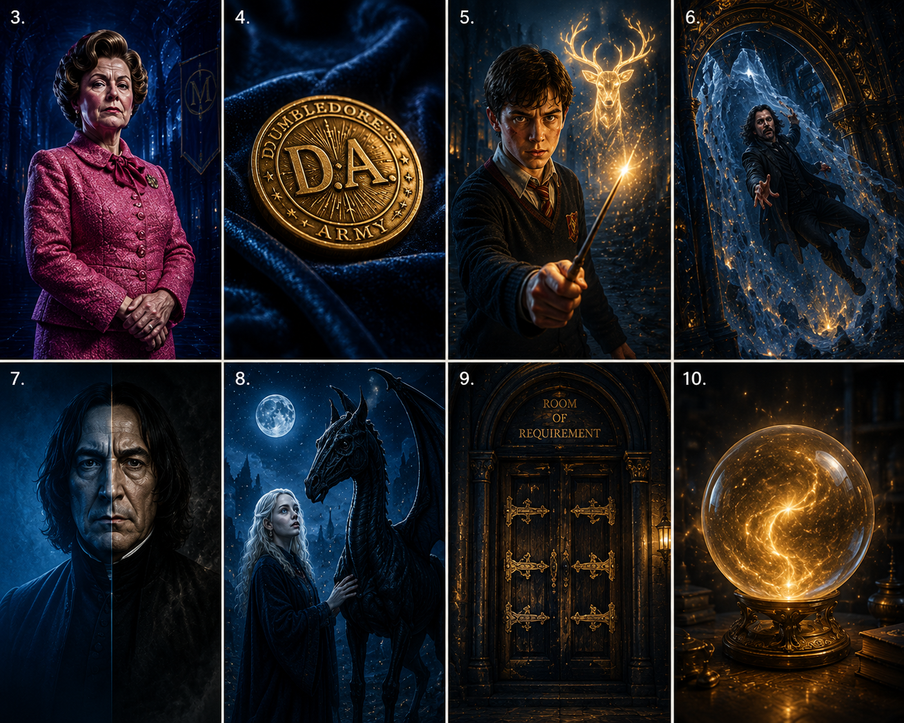
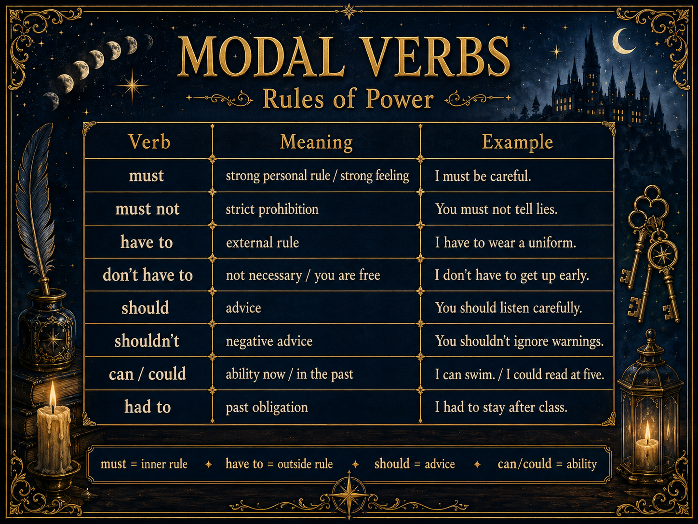
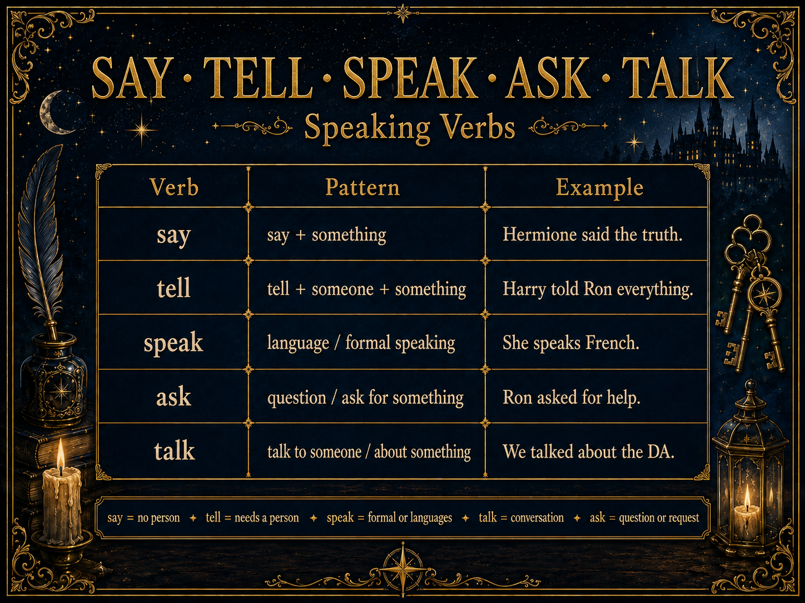
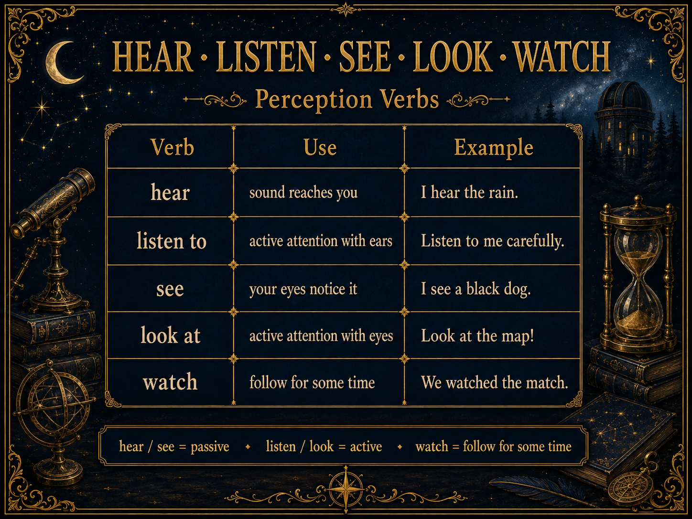
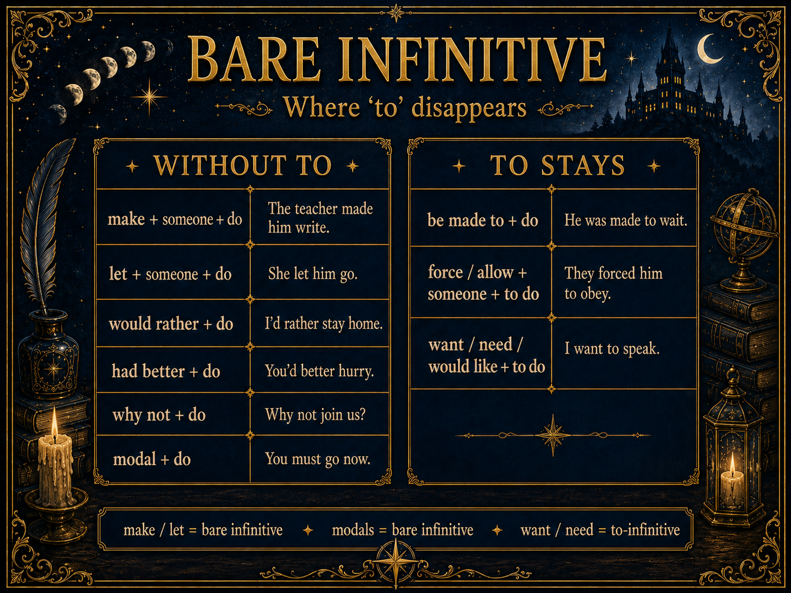
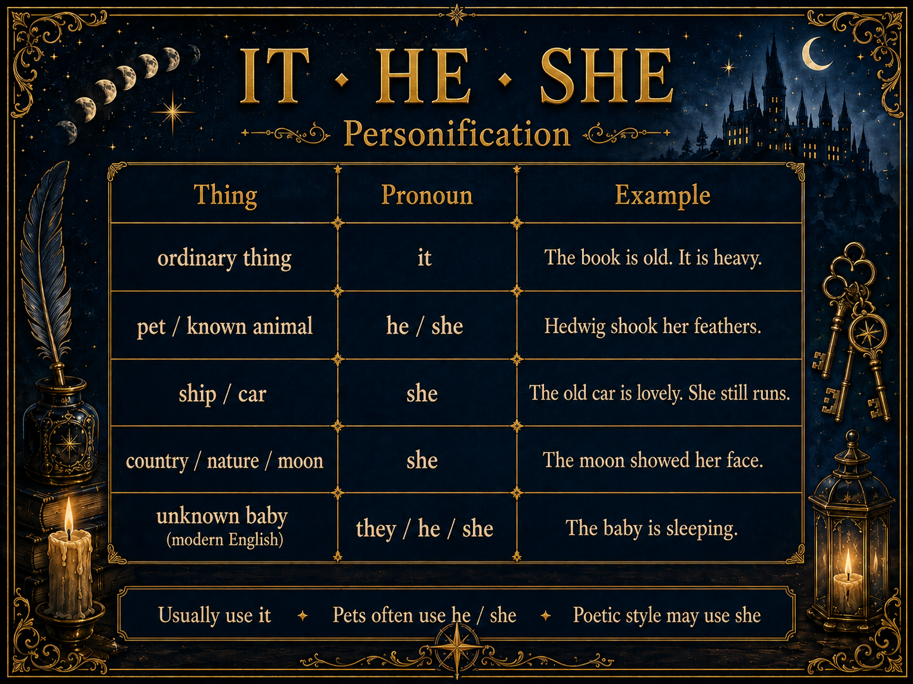
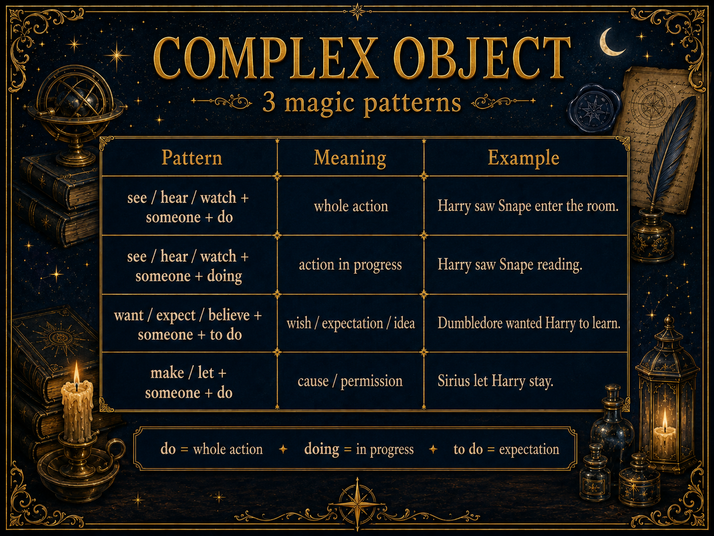
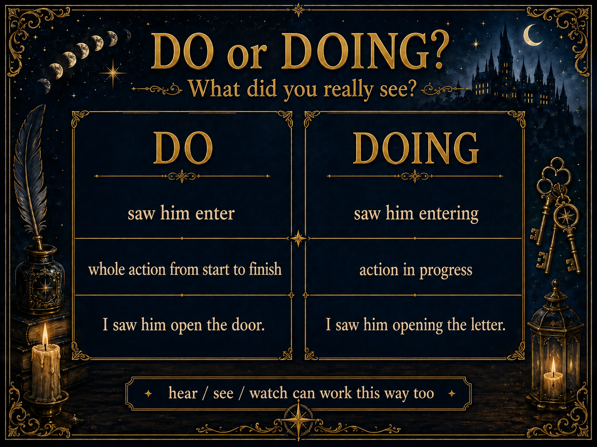

Order of the Phoenix is the most «rule-heavy» book in the series. Umbridge introduces must, must not, you have to; the DA breaks every rule they can; Harry learns whom to trust and when to stay silent. From the characters — straight into the grammar of power and voice.
Twenty words that describe people in the Order of the Phoenix — ten nouns (roles) and ten adjectives (traits). Each with a Book 5 quote.
Amy + Brian alternate. Play once, repeat aloud after each line.

| Word | POS | Meaning | Book 5 example |
|---|---|---|---|
| a mentor | n | an older person who teaches the hero | Dumbledore is the classic mentor. |
| a rebel | n | someone who fights the system | Sirius is the rebel of the Black family. |
| a tyrant | n | a cruel ruler with too much power | Umbridge becomes a small tyrant at Hogwarts. |
| a spy | n | someone who works secretly for one side | Snape is the ultimate double spy. |
| a prophet | n | someone who sees the future | Trelawney speaks the true prophecy. |
| a martyr | n | someone who dies for their cause | Sirius becomes a martyr for Harry. |
| an ally | n | a person on your side in a fight | Luna is a strange but true ally. |
| a coward | n | someone too scared to do what's right | Fudge is a political coward. |
| a traitor | n | someone who betrays their side | Marietta betrays the DA. |
| a hero | n | the person we follow through the story | Harry is a very unwilling hero in Book 5. |
| an outcast | n | someone the group has pushed away | Harry feels like an outcast most of Book 5. |
| a foil | n | character who highlights another by contrast | Neville is a foil to Harry — same prophecy, other choice. |
| Word | POS | Meaning | Book 5 example |
|---|---|---|---|
| brave | adj | doing the scary thing anyway | Neville is quietly brave in Book 5. |
| loyal | adj | standing by your people no matter what | Ron and Hermione are always loyal to Harry. |
| stubborn | adj | refusing to change your mind | Harry is stubborn — sometimes too stubborn. |
| cruel | adj | enjoying to hurt other people | Umbridge is quietly, politely cruel. |
| cunning | adj | clever in a sneaky way | Fred and George are cunning in the best way. |
| secretive | adj | keeping things hidden from others | Snape is secretive — we never see his full plan. |
| defiant | adj | openly refusing to obey | Ginny is defiant — she does not fear Umbridge. |
| misunderstood | adj | people think the wrong thing about you | Luna is misunderstood by almost everyone. |
| ambitious | adj | wanting power or success very strongly | Percy Weasley becomes painfully ambitious in Book 5. |
| tragic | adj | ending in sadness or loss | Sirius's story is deeply tragic. |
First shout NO!!! and give the correct definition on your own. Then play this to check.
Each sentence has ONE wrong word from the vocab. Cross it out (mentally) and pick the right one.
Three words belong together. One doesn't. Pick the odd one.
For each word, pick its opposite from the list.
Same words — different jobs. Sort each one.
Two emojis → which vocab word?
A short Book 5 scene → pick the vocab word that describes it best.
Six question-cards — one for each modal. Start with «Actually, I think…» or «It depends…». Notice which modal lands in your answer — that's the whole point.

must / must not — strong personal rule or strict prohibition. You must lock the door. You must not smoke here.
have to — external rule (school, law, parents). I have to wear a uniform.
should / shouldn't — soft advice, opinion. You should sleep more.
can / could — ability now / in the past. I can swim. I could ride a bike at 5.
had to — past obligation (there was no choice). I had to stay after class.
don't have to — you're free, not necessary. On Sunday I don't have to get up early.
Five verbs of speaking that constantly get mixed up. Each has its own pattern.
Amy (British female) + Brian (British male). Listen through once, then use as answer key for the exercises below.

say + something (no person). Dumbledore said the truth.
tell + someone + something. Harry told Ron everything.
speak — general process, languages, public speaking. She speaks French. He spoke at the meeting.
ask — a question or a request. Harry asked Sirius about the past. Ron asked for help.
talk (to / about) — conversation. We talked about the DA all night.
Say the full sentence out loud with the right verb before you click.
Six short lines. Don't read the answer — listen first, say it back, then pick.
Read the paragraph first without stopping. Then go back and pick a verb for each gap.
Passive perception (it just reaches your ears / eyes) vs. active directed attention.

hear — you just hear, no choice. I hear the rain.
listen (to) — you choose to listen. Harry listened to Sirius carefully.
see — you just see. I see a black dog outside.
look (at) — you choose to look. Look at that Thestral!
watch — you watch for a long time, follow. Harry watched the fight through the memory.
After certain verbs and structures the particle to simply disappears. It's not a mistake — it's the rule.

make + smb + do. Umbridge made Harry write with a blood-quill. — NOT «to write».
let + smb + do. Sirius let Harry read the letter.
would rather + do. I'd rather stay silent than lie.
why not + do. Why not join the DA?
had better + do. You'd better be careful with Umbridge.
modal verbs can / must / should / will + do. You must go now.
be made to (passive) — Harry was made to write.
allow / force + smb + to do — Umbridge forced them to obey.
want / would like / need + to do.
In English, a thing or an animal can be he / she instead of it. Not a grammar mistake — a piece of history.

Amy + Brian tell the six-century story of how a wooden hull became «her».
Sailors have called their ships «she» for over 600 years — the Oxford English Dictionary traces it back to the 14th century. Three strands of story braid into this tradition:
Even ships named after men — the German battleship Bismarck, the Russian Peter the Great — take she. That's how deep the tradition sits.
Fun trivia — two ships of the same design are called sister ships. A larger ship that carries smaller ones is a mothership.
Big style-guides — Chicago Manual, AP, New York Times — now recommend it for ships in formal writing. But the Royal Navy and the US Navy still officially write she. And in literature, poetry, songs and everyday sailor talk — she is very much alive.
For Katya: use she / he for pets always. For ships and cars in stories and poetry — free to. In an exam or news article — safer with it.
Some can be it, some traditionally he / she. Trust your ear.
A construction where a person + an action follows the verb. Three main patterns: with bare infinitive, with to-infinitive, with -ing.


PERCEPTION verbs (see / hear / watch / feel) + smb + bare infinitive — you saw the whole action.
Harry saw Snape enter the pensieve. (he entered — you saw it all).
PERCEPTION verbs + smb + -ing — you caught the action in progress.
Harry saw Snape reading a letter. (in the middle of reading).
WANT / EXPECT / KNOW / BELIEVE + smb + to do.
Dumbledore wanted Harry to learn Occlumency.
MAKE / LET + smb + bare infinitive (we already know).
Sirius let Harry stay.
Speed check. Any topic from the lesson — modal, speaking verb, perception verb, bare infinitive, complex object or personal pronoun.
Give one monologue (at least six sentences):